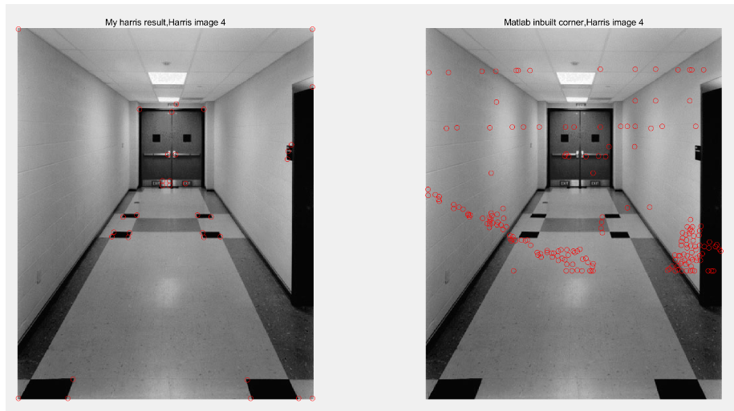

Harris corner
Lab2 of ENGN4528(Computer Vision) - 2020 S1
Used Matlab to implement harris corner algorithm. Analyzed the effect of different parameters.
K-means segmentation
Implemented k-means algorithm and K-means++ algorithm.
Used different color space with x,y coordinates for color image segmentation.
PCA faces
Implemented PCA algorithm to do the face detection task.
Tested on yale faces dataset with more than 90% accuracy.
Graded 95/100.
[Full report]
This link contains all lab material.
